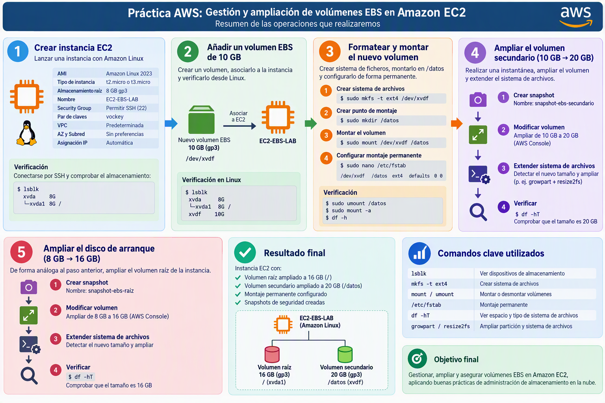

Práctica AWS: Gestión y ampliación de volúmenes EBS en Amazon EC2¶
Objetivos¶

En esta práctica trabajaremos los siguientes contenidos:
- Crear una instancia Amazon EC2 con Amazon Linux.
- Asociar un volumen EBS adicional.
- Identificar dispositivos de almacenamiento en Linux.
- Crear partición en volumen nuevo.
- Crear sistemas de ficheros.
- Montar volúmenes de forma permanente mediante
/etc/fstab. - Realizar instantáneas (snapshots) de seguridad.
- Ampliar un volumen EBS existente y extender el sistema de archivos.
- Ampliar el volumen raíz (disco de arranque) de una instancia EC2.
Parte 1. Creación de la instancia EC2¶
1. Crear una instancia Amazon EC2¶
Características¶
| Parámetro | Valor |
|---|---|
| AMI | Amazon Linux 2023 |
| Tipo de instancia | t{x}.micro de capa gratuíta más actual |
| Almacenamiento raíz | 8 GB gp3 |
| Nombre | EC2-EBS-LAB |
| Security Group | Permitir SSH (22) |
| Par de claves | vockey |
| VPC | Predeterminada |
| AZ y Subred | Sin preferencias |
| Asignación IP | Automática |
Verificación¶
Conectarse al EC2 mediante SSH o desde el botón Conectar de la consola:
Comprobar el almacenamiento disponible:
Resultado esperado (instancia t3 basada en Nitro):
NAME SIZE TYPE MOUNTPOINTS
nvme0n1 8G disk
├─nvme0n1p1 8G part /
├─nvme0n1p127 1M part
└─nvme0n1p128 10M part /boot/efi
En las instancias Nitro (t3, m5, c5…) los volúmenes EBS se ven como dispositivos NVMe (
nvme0n1,nvme1n1…), aunque en la consola aparezcan como/dev/xvdao/dev/xvdf. Solo en tipos antiguos como t2 se ven comoxvda.
Parte 2. Añadir un volumen EBS de 10 GB¶
1. Crear el volumen¶
Desde AWS Console:
EC2 → Elastic Block Store → Volumes → Create Volume
Parámetros:
| Configuración | Valor |
|---|---|
| Tipo | gp3 |
| Tamaño | 10 GB |
| Zona de disponibilidad | La misma que la EC2 |
2. Asociar el volumen¶
Asociamos el volumen a la máquina EC2
Dispositivo sugerido:
/dev/xvdf
3. Verificar desde Linux¶
Resultado aproximado:
NAME SIZE TYPE MOUNTPOINTS
nvme0n1 8G disk
├─nvme0n1p1 8G part /
├─nvme0n1p127 1M part
└─nvme0n1p128 10M part /boot/efi
nvme1n1 10G disk
El volumen nuevo es nvme1n1. Puedes confirmarlo con lsblk -o NAME,SIZE,SERIAL: el número de serie coincide con el ID del volumen.
Parte 3. Formatear y montar el nuevo volumen¶
1. Crear una partición en el volumen nuevo¶
A diferencia de la práctica anterior, esta vez no daremos formato al disco completo: crearemos primero una partición que ocupe todo el volumen.
# Instalamos parted si no está instalado
sudo dnf install -y parted
# Tabla de particiones GPT y una partición que ocupa todo el disco
sudo parted --script /dev/nvme1n1 mklabel gpt mkpart datos xfs 0% 100%
# Comprobamos que aparece la partición nvme1n1p1
lsblk /dev/nvme1n1
2. Crear el sistema de archivos y montarlo¶
Guiándote por los pasos de la práctica anterior haz los siguientes pasos, teniendo en cuenta que ahora el dispositivo que se formatea y se monta es la partición /dev/nvme1n1p1, no el disco /dev/nvme1n1:
-
Crear sistema de archivos xfs
-
Crear punto de montaje en
/datos -
Montar el volumen
-
Configurar el montaje permanente en
/etc/fstab
3. Verificar /etc/fstab¶
Comprobar:
Si el volumen vuelve a montarse correctamente la configuración es válida.
Parte 4. Ampliación del volumen secundario¶
Escenario¶
Vamos a ampliar el volumen secundario pasándolo de 10GB a 20GB. Antes de ampliarlo, haremos una instantánea que nos servirá de copia de seguridad:
-
Creamos snapshot con nombre
snapshot-ebs-secundario -
Modificamos el volumen para ampliarlo a 20GB. Guía
-
Ampliamos el sistema de archivos después de cambiar el tamaño del volumen. Guía. Como el volumen tiene una partición, primero hay que ampliar la partición (
growpart /dev/nvme1n1 1) y después el sistema de archivos (xfs_growfs). -
Comprueba con el comando
df -hTque se ha ampliado correctamente el sistema de archivos.
Parte 5. Ampliación del disco de arranque¶
De forma análoga al apartado 4, vamos a duplicar el almacenamiento del disco de arranque pasándolo de 8GB a 16GB. Antes de ampliarlo, haremos una copia de seguridad.
-
Creamos snapshot con nombre
snapshot-ebs-raiz -
Modificamos el volumen para ampliarlo a 16GB. Guía
-
Ampliamos el sistema de archivos después de cambiar el tamaño del volumen. Guía.
-
Comprueba con el comando
df -hTque se ha ampliado correctamente el sistema de archivos.
Una vez realizada la práctica, no te olvides de eliminar los recursos que has creado en el laboratorio para evitar costes innecesarios en la cuenta.